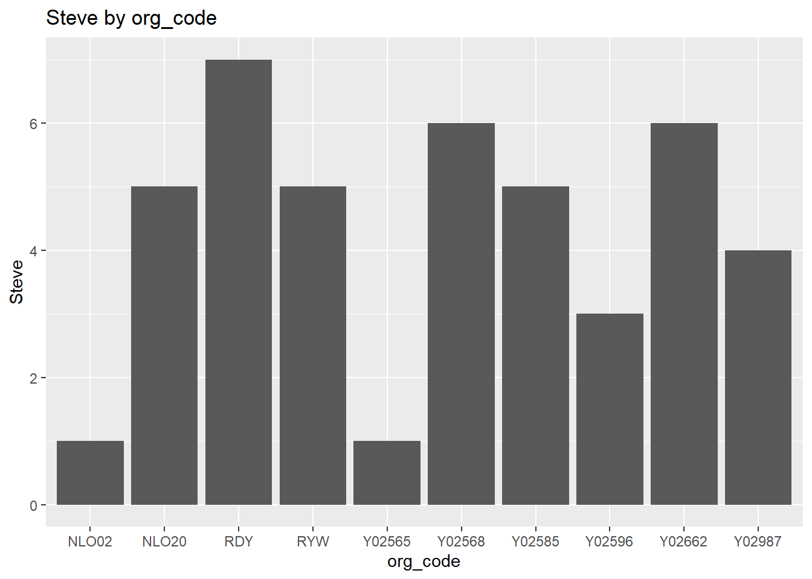

library(NHSRdatasets)
library(dplyr)
library(purrr)
library(ggplot2)Data masking in R
R
intermediate
functions
debugging
Session materials
Introduction
More so than in other programming languages, R functions bias towards helping the user do common tasks easily. One excellent example is the way that tidyverse functions (like dplyr) make assumptions about what users mean when they refer to variables. As an example:
stranded_data |>
select(age) # A tibble: 768 × 1
age
<int>
1 50
2 31
3 32
4 69
5 33
6 75
7 26
8 64
9 53
10 63
# ℹ 758 more rowsWhen we specify the age column in this select function, we don’t need to tell R that we specifically mean the age column in the stranded_data tibble. That’s very helpful, because it saves us having to specify that we want to refer to a specific column in a specific tibble each time we write a line of dplyr. Even if we create another tibble that also has an age column…
new_stranded_data <- stranded_data |>
select(stranded.label, age)… we can still just refer to the age column of the original stranded_data without any risk of confusion. This simplification - which we’ll call data masking - is a great advantage of using the pipe, and most of the time data masking just works without giving rise to any problems at all. For example, we can write a vector of column names, and then pass it to select(), and R will figure out that we want to use those names as column names without any extra effort on our part:
my_cols <- c("age", "care.home.referral", "medicallysafe")
stranded_data |>
select(any_of(my_cols))# A tibble: 768 × 3
age care.home.referral medicallysafe
<int> <int> <int>
1 50 0 0
2 31 1 0
3 32 0 1
4 69 1 1
5 33 0 0
6 75 1 1
7 26 1 0
8 64 0 1
9 53 0 1
10 63 1 0
# ℹ 758 more rowsThat means that cases where data masking goes wrong can be enormously frustrating, because most of the time we don’t have to think about what are code is really doing very often at all. Here’s an example of such a problem in a function that picks a specified column from stranded_data and displays it:
column_displayer <- function(col_name) {
stranded_data |>
select(any_of(col_name))
}If we try to use this column_displayer() function in the normal way, we’ll receive an error:
try(column_displayer(age))Error in select(stranded_data, any_of(col_name)) :
ℹ In argument: `any_of(col_name)`.
Caused by error:
! object 'age' not foundOkay, so we can dodge this error in this case by quoting the column name when we supply it as an argument:
column_displayer("age")# A tibble: 768 × 1
age
<int>
1 50
2 31
3 32
4 69
5 33
6 75
7 26
8 64
9 53
10 63
# ℹ 758 more rowsBut this non-standard “kludge” leads to trouble when we want to, for instance, use column_displayer() inside another function. A stronger approach is to adjust our function code in the first place, so that we don’t have to call our function in a non-standard way (why write age in some functions, but “age” in others to refer to the same thing).
In this section, we’ll give a bit of helpful theoretical background about data masking. We’ll then go on to look at four ways of resolving some of the difficulties that data masking can cause.
Background
The rlang page on data-masking is very helpful here in setting out a key distinction between kinds of variables that we’ve previously been using synonymously:
- env-variables (things you create with assignment)
- data-variables (e.g. imported data in a tibble)
For beginners, this distinction is not that important, particularly because tidyverse functions do lots of helpful blurring between these different types of variable. Note that many base R functions do often require the user to bear this distinction in mind. For instance, in base R you would specify a data variable differently from an environment variable:
mtcars$cyl # a data variable
cyl <- c(4,6,8) # an environment variableWhereas in tidyverse, you can:
mtcars |>
select(cyl) # specifying a data variable like an environment variable inside selectMost of the time, data masking doesn’t cause any problems. However, when you start wanting to include tidyverse functions inside other functions, that blurring raises a problem. We won’t give much of an explanation as to the reasons for this, although do read this introduction to the topic and this more detailed account if you are interested in the technical aspects. Here, we’ll concentrate on four strategies for resolving these kind of data masking problems. These strategies are:
# A tibble: 4 × 2
Problem Solution
<chr> <chr>
1 data-variable in a function argument **embracing** with `{var}`
2 env-variable in a vector `.data[[var]]` and `.env[[var]]` **prono…
3 variables in output **injection** with **`:=`**
4 complex cases **quasiquotation** with the injection op…Embracing
Slightly confusingly, this practice is also referred to [as tunneling data] variables(https://www.tidyverse.org/blog/2020/02/glue-strings-and-tidy-eval/)
If you want to use a data variable in the argument of a function, you need to {embrace} the argument. Here’s some code to produce a rounded mean of a column in ae_attendances in cases where breaches are over 100:
ae_attendances |>
filter(breaches > 100) |>
pull(attendances) |>
mean() |>
round(2)[1] 9314.45We can generalise this to a function, which won’t work properly:
ae_means <- function(colname) {
ae_attendances |>
filter(breaches > 100) |>
pull(colname) |>
mean() |>
round(2)
}
try(ae_means(breaches))Error in pull(filter(ae_attendances, breaches > 100), colname) :
Caused by error:
! object 'breaches' not foundHowever, if we embrace the argument in the pull() call:
ae_means <- function(colname) {
ae_attendances |>
filter(breaches > 100) |>
pull({{colname}}) |>
mean() |>
round(2)
}We can use that new function in a standard way:
ae_means(breaches)[1] 1501.65ae_means(admissions)[1] 2427.32And that’s worthwhile, because (unlike the non-standard quoted version earlier) we can then use that functions e.g. with purrr:
orgs <- ae_attendances |>
select(where(is.numeric)) |>
names()
purrr::map(orgs, ae_means)[[1]]
[1] 9314.45
[[2]]
[1] 1501.65
[[3]]
[1] 2427.32Pronouns
If you want to use an variable that comes from a character vector, then use pronouns. Pronouns allow you to specify how a variable should be interpreted. If we create an atomic vector:
variable <- c("type")We might then try to use this variable inside count(), but there are horrors there:
try(ae_attendances |>
count(variable))Error in count(ae_attendances, variable) :
Must group by variables found in `.data`.
✖ Column `variable` is not found.If we now add the .data[[]] pronoun:
ae_attendances |>
count(.data[[variable]]) # A tibble: 3 × 2
type n
<fct> <int>
1 1 4932
2 2 1135
3 other 6698The .env[[]] pronoun works in a similar way. Imagine that we happen to have an env-variable that shares the name of one of our data-variables:
attendances <- 800If we try to use it to filter our data, we’ll run into a problem:
ae_attendances |>
filter(breaches >= attendances) # A tibble: 0 × 6
# ℹ 6 variables: period <date>, org_code <fct>, type <fct>, attendances <dbl>,
# breaches <dbl>, admissions <dbl>(this is based on an actual problem I manufactured for myself while writing the functions training)
This gives an unexpected result, because there are definitely cases where we have more than 800 breaches. In fact we have something like 3598 cases with more than 800 breaches. And what’s going on here is that there’s an ambiguity - which attendances do we mean? This is where pronouns come in, by allowing us to be precise about where the variable is coming from:
ae_attendances |>
filter(.data[["breaches"]] >= .env[["attendances"]]) |>
arrange(breaches) # A tibble: 3,598 × 6
period org_code type attendances breaches admissions
<date> <fct> <fct> <dbl> <dbl> <dbl>
1 2016-04-01 RLT 1 5691 800 1023
2 2017-10-01 RYR 1 11741 800 3395
3 2018-01-01 RC1 1 6162 802 2121
4 2018-01-01 RR7 1 7269 802 1810
5 2019-02-01 RQX 1 9955 802 1493
6 2017-07-01 RWW 1 7094 803 2620
7 2019-03-01 RBZ 1 3925 803 1104
8 2016-10-01 RJN 1 4234 805 978
9 2018-08-01 RNQ 1 7495 805 2596
10 2016-10-01 RGR 1 5814 806 2017
# ℹ 3,588 more rows(you can get away, in this case, without the .data[[]], but included here as an extra example)
Injection
:= lets you inject variables into your output. For example, to ensure that the name of a new summary column matches a supplied column name in a function, we can inject the variable into the newly-created column name:
col_means <- function(column, cutoff) {
ae_attendances |>
filter({{column}} > {{cutoff}}) |>
group_by(type) |>
summarise("mean_{column}" := round(mean(.data[[column]]), 1))
}The column name is created using glue() syntax. glue() is a neat replacement for base-R tools like paste0():
column <- c("breaches")
cutoff <- 400
cat(glue::glue("This is how we'd include the column ({column}), and the cutoff ({cutoff}) in Quarto/Rmarkdown using `glue`")) # easier to readThis is how we'd include the column (breaches), and the cutoff (400) in Quarto/Rmarkdown using `glue`The column name is then injected using the := operator. When we call our col_means() function, the supplied column name is injected into the new summary column:
col_means("attendances", 400)# A tibble: 3 × 2
type mean_attendances
<fct> <dbl>
1 1 9391.
2 2 1549.
3 other 3575.Similar injections can be applied across a range of dplyr functions. We’ll demonstrate these below using a vector containing the new column name, but injection is most useful when included as part of a function that you might want to apply across several different aspects of your data:
new_column_name <- c("Steve")
ae_attendances |>
mutate("{new_column_name}" := round(attendances ^ 0.5, 2) )# A tibble: 12,765 × 7
period org_code type attendances breaches admissions Steve
<date> <fct> <fct> <dbl> <dbl> <dbl> <dbl>
1 2017-03-01 RF4 1 21289 2879 5060 146.
2 2017-03-01 RF4 2 813 22 0 28.5
3 2017-03-01 RF4 other 2850 6 0 53.4
4 2017-03-01 R1H 1 30210 5902 6943 174.
5 2017-03-01 R1H 2 807 11 0 28.4
6 2017-03-01 R1H other 11352 136 0 107.
7 2017-03-01 AD913 other 4381 2 0 66.2
8 2017-03-01 RYX other 19562 258 0 140.
9 2017-03-01 RQM 1 17414 2030 3597 132.
10 2017-03-01 RQM other 7817 86 0 88.4
# ℹ 12,755 more rowsae_attendances |>
rename("{new_column_name}" := attendances) # A tibble: 12,765 × 6
period org_code type Steve breaches admissions
<date> <fct> <fct> <dbl> <dbl> <dbl>
1 2017-03-01 RF4 1 21289 2879 5060
2 2017-03-01 RF4 2 813 22 0
3 2017-03-01 RF4 other 2850 6 0
4 2017-03-01 R1H 1 30210 5902 6943
5 2017-03-01 R1H 2 807 11 0
6 2017-03-01 R1H other 11352 136 0
7 2017-03-01 AD913 other 4381 2 0
8 2017-03-01 RYX other 19562 258 0
9 2017-03-01 RQM 1 17414 2030 3597
10 2017-03-01 RQM other 7817 86 0
# ℹ 12,755 more rowsae_attendances |>
group_by(org_code) |>
summarise("{new_column_name}" := n()) |>
arrange(.data[[new_column_name]]) |>
slice(1:10) |>
ggplot() +
geom_col(aes(x=org_code, y=.data[[new_column_name]])) +
ggtitle(glue::glue("{new_column_name} by org_code"))
Quasiquotation
Informally, the := operator that we explored in the previous subsection functions behaved as if it were adding quotes around the variable that was passed to it. That meant that we could pass a quoted variable to a function, and yet return the result as expected:
quoted_variable <- "Steve"
ae_attendances |>
rename("{quoted_variable}" := attendances) # A tibble: 12,765 × 6
period org_code type Steve breaches admissions
<date> <fct> <fct> <dbl> <dbl> <dbl>
1 2017-03-01 RF4 1 21289 2879 5060
2 2017-03-01 RF4 2 813 22 0
3 2017-03-01 RF4 other 2850 6 0
4 2017-03-01 R1H 1 30210 5902 6943
5 2017-03-01 R1H 2 807 11 0
6 2017-03-01 R1H other 11352 136 0
7 2017-03-01 AD913 other 4381 2 0
8 2017-03-01 RYX other 19562 258 0
9 2017-03-01 RQM 1 17414 2030 3597
10 2017-03-01 RQM other 7817 86 0
# ℹ 12,755 more rowsWhat if we also need to use this variable in an unquoted way? For example, say we now want to use select() to pick out our Steve column?
In a function where an argument is supplied quoted, you can unquote it with !!:
ae_attendances |>
rename("{quoted_variable}" := attendances) |>
select(!!quoted_variable) # A tibble: 12,765 × 1
Steve
<dbl>
1 21289
2 813
3 2850
4 30210
5 807
6 11352
7 4381
8 19562
9 17414
10 7817
# ℹ 12,755 more rowsThat gives us a useful and clear way of thinking about quasiquotation. To borrow the description from the manual page:
Quasiquotation is the combination of quoting an expression while allowing immediate evaluation (unquoting) of part of that expression. (rlang quasiquotation manual page)
And the strength of using quasiquotation is that it grants lots of scope for handling variables in comparatively complicated function. For example, if we want to create a function to take a supplied tibble and column name, and generate a bit of Rmarkdown with a header and summary of that column, quasiquotation (and injection) allow us to wrangle our variables so that they are compatible with the tidyverse functions that we’d like to use:
distinct_entries <- function(df, col_name){
cat(glue::glue("#### Results for {col_name}: \n \n")) # using glue syntax
df |>
select(!!sym(col_name)) |> # using quasiquotation to select the supplied column
rename("distinct_{col_name}" := col_name) |> # using injection to rename the column
distinct()
}
distinct_entries(ae_attendances, "org_code")#### Results for org_code:
# A tibble: 274 × 1
distinct_org_code
<fct>
1 RF4
2 R1H
3 AD913
4 RYX
5 RQM
6 RJ6
7 Y02696
8 NX122
9 RVR
10 RJ1
# ℹ 264 more rows